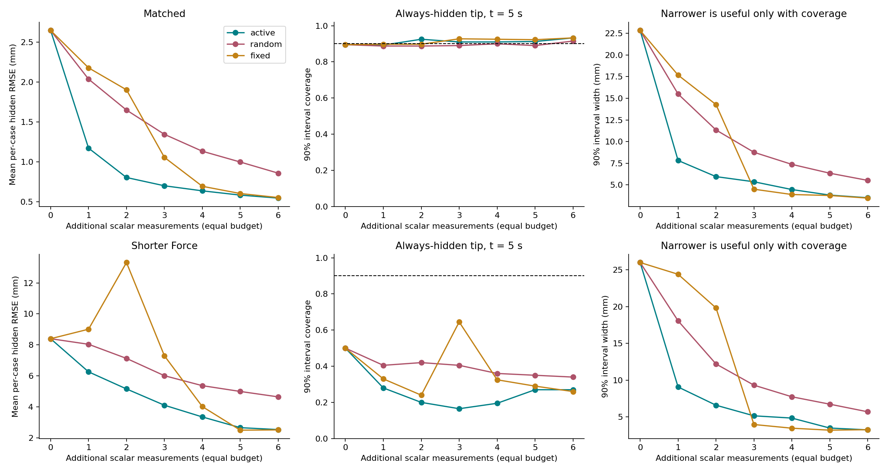
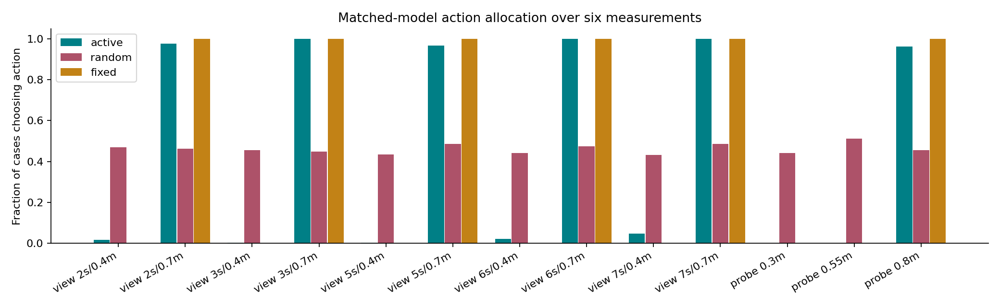
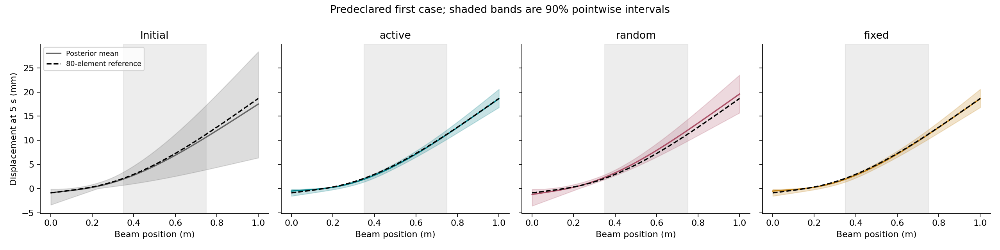

Active, random and fixed policies start from exactly the same three sparse frames. Each gets six additional scalar measurements. Active planning integrates over unknown forces and support hypotheses and minimizes expected hidden-motion prediction variance. The fixed policy observes all five initially missing times at the most distal available visible point, then applies one calibrated probe.
This is a replayable, quasistatic one-metre beam, with known material and camera geometry. All measurements are noisy tracks, not image-based reconstruction. Actions revisit an original loading state or apply a known load to the unloaded beam. Physical probes have ideal known load, reference and unchanged support; all actions have equal measurement cost, not equal real robot execution time.

| Population | Policy | Hidden RMSE mm | 90% coverage | Width mm | Interval score mm ↓ |
|---|---|---|---|---|---|
| matched | active | 0.547 | 93.2% | 3.517 | 4.001 |
| matched | random | 0.859 | 91.5% | 5.522 | 6.900 |
| matched | fixed | 0.554 | 93.2% | 3.477 | 3.944 |
| shorter_force | active | 2.525 | 27.0% | 3.253 | 76.539 |
| shorter_force | random | 4.638 | 34.0% | 5.708 | 123.988 |
| shorter_force | fixed | 2.504 | 26.0% | 3.276 | 71.474 |
Errors average per-case RMSE over all eight times and unobserved x<0.3 or x>0.8. Coverage is for the never-observed tip at 5s. Width and the proper interval score distinguish useful confidence from overconfidence. Coverage is prior-predictive across independent cases; it is not simultaneous trajectory coverage.
Intervals above resample entire paired cases, not correlated points. A confidence interval spanning zero does not establish an advantage.


Matched scalar calibration gate: True. Shorter-force-prior stress gate: False. Gates examine 90% coverage and PIT at every stage and are descriptive multiple checks, not a familywise test. The stress arm changes the true force correlation from 2s to 0.8s without telling the estimator; uncertainty reduction alone does not demonstrate correctness.
Mechanics refinement and balance: True. Quadrature is audited against order 61 on the first 8 cases of each population, every active step. Maximum relative decision regret: 0. This is one-step Bayes-risk planning, not a globally optimal six-action policy. The finite support grid and known material restrict the claim.
The inference code never receives true loads, boundary labels or unselected observations. Different actions are evaluated against the same hidden original trajectory. Every posterior force distribution is integrated analytically; no chain convergence or neural-network training is involved.
Full aggregate metrics · Execution and source hashes · Matched data, actions and posteriors · Stress data, actions and posteriors